ORM笔记
这部分来自数据库这门课的学习，下面内容主要来自实验报告。数据库软件是SQL server。
为了更好理解Django对于数据库的操作，先介绍其依托的pyodbc库。
前情提要：pyodbc
这一部分需要安装ODBC Driver 17 for SQL Server，这是微软官方提供的使用 ODBC 标准的数据库连接驱动程序，用于在应用程序和 SQL Server 之间建立通信桥梁。如果安装 SQL Server 相关工具和环境的时候已经安装该功能则可略过。
本实验采用Python3.12，第一种方案基于外部库pyodbc，第二种方案基于后端开发库Django的数据库处理模块django.db。
pyodbc库介绍
Python的外部库 pyodbc 是一个开源的 Python 模块，它允许 Python 程序通过 ODBC 标准接口访问各种数据库管理系统。该库支持多种数据库系统，包括 Microsoft SQL Server、MySQL、PostgreSQL、Oracle、SQLite 等，这使其成为跨平台数据库交互的有力工具。
pyodbc 实现了 DB-API 2.0 规范，并提供了更符合 Python 风格的便捷功能，简化了数据库连接、SQL 语句执行、结果集处理、事务管理等操作。
使用以上命令行语句安装，Python3.12默认安装5.3.0版本的pyodbc。
pyodbc编程有两个核心类/对象。
第一个是“数据库连接对象”，它是一次数据库访问从连接到释放的最高级抽象，使用pyodbc.connect()方法建立，其中需要填入格式化的字符串作为参数。
第二个是“游标对象”，它是“数据库连接对象”的cursor()方法返回的，是执行SQL命令和获取结果的抽象执行者。它的execute()方法填入SQL语句，fetch系列方法获得执行结果。
它们的使用都需要释放，一个基本框架如下：
| Python |
|---|
1
2
3
4
5
6
7
8
9
10
11
12
13
14
15
16
17
18
19
20
21
22
23 | import pyodbc
conn = pyodbc.connect(
'DRIVER={ODBC Driver 17 for SQL Server};'
'SERVER=......;'
'UID=......;'
'PWD=......'
)
cursor = conn.cursor()
# 打印版本作为验证
cursor.execute("SELECT @@VERSION")
print(cursor.fetchone())
# 查询 CUSTOMER 表前 10 条
print("=== 前 10 个客户 ===")
cursor.execute("SELECT TOP(10) * FROM BUPT_DBLAB.dbo.CUSTOMER")
for row in cursor.fetchall():
print(row)
cursor.close()
conn.close()
|
增删改查代码与运行结果
设计如下对单表进行增删改查的代码：
| Python |
|---|
1
2
3
4
5
6
7
8
9
10
11
12
13
14
15
16
17
18
19
20
21
22
23
24
25
26
27
28
29
30
31
32
33
34
35
36
37
38
39
40
41
42
43
44
45
46
47
48
49
50
51
52
53
54
55
56
57
58
59
60
61
62
63
64
65
66
67
68
69
70
71
72
73
74
75
76
77
78
79
80
81
82
83
84
85
86
87
88
89
90
91
92
93
94
95
96
97
98
99
100
101
102
103
104
105
106
107
108
109
110
111
112
113
114
115
116
117
118
119
120
121
122
123
124
125
126
127
128
129
130
131
132 | import pyodbc
# 修改连接配置，设置默认数据库
conn = pyodbc.connect(
'DRIVER={ODBC Driver 17 for SQL Server};'
'SERVER=10.129.78.132;'
'DATABASE=BUPT_DBLAB;'
'UID=LeoTian;'
'PWD=LeoTian'
)
cursor = conn.cursor()
print("=== 查前5条数据 ===")
cursor.execute("SELECT TOP(5) * FROM CUSTOMER")
original_records = []
for i, row in enumerate(cursor.fetchall(), 1):
original_records.append(row)
print(f"{i}|{row}")
# 1. 查询当前表中的记录数
print("\n=== 当前客户总数 ===")
cursor.execute("SELECT COUNT(*) FROM CUSTOMER")
original_count = cursor.fetchone()[0]
print(f"原始总数: {original_count}")
# 2. 查询最后一条记录的信息
print("\n=== 查询最后一条记录作为模板 ===")
cursor.execute("""
SELECT C_CUSTKEY, C_NAME, C_ADDRESS, C_NATIONKEY, C_PHONE, C_ACCTBAL, C_MKTSEGMENT, C_COMMENT
FROM CUSTOMER
ORDER BY C_CUSTKEY DESC
""")
template_record = cursor.fetchone()
if not template_record:
print("表中无数据")
exit()
print("模板记录:", template_record)
template_custkey = template_record[0]
# 3. 基于最后一条记录创建新记录
print("\n=== 插入基于模板的新记录 ===")
try:
# 基于最后一条记录，修改一下，创建新记录
new_custkey = template_custkey + 1 # 新的主键
new_name = template_record[1].replace("Customer#", "Test#")
new_address = "MODIFIED"
new_nationkey = template_record[3]
new_phone = template_record[4]
new_acctbal = template_record[5] + 100
new_mktsegment = "MODIFIED"
new_comment = "MODIFIED"
insert_sql = """
INSERT INTO CUSTOMER (C_CUSTKEY, C_NAME, C_ADDRESS, C_NATIONKEY, C_PHONE, C_ACCTBAL, C_MKTSEGMENT, C_COMMENT)
VALUES (?, ?, ?, ?, ?, ?, ?, ?)
"""
cursor.execute(insert_sql, (new_custkey, new_name, new_address, new_nationkey,
new_phone, new_acctbal, new_mktsegment, new_comment))
conn.commit()
print(f"成功插入新记录，C_CUSTKEY: {new_custkey}")
except Exception as e:
print(f"插入记录失败: {e}")
conn.rollback()
exit()
# 验证插入结果
cursor.execute("SELECT COUNT(*) FROM CUSTOMER")
after_insert_count = cursor.fetchone()[0]
print(f"插入后总数: {after_insert_count}")
# 4. 查询并显示刚插入的记录
cursor.execute("SELECT * FROM CUSTOMER WHERE C_CUSTKEY = ?", (new_custkey,))
inserted_record = cursor.fetchone()
print("\n=== 刚插入的记录 ===")
print("插入的记录:", inserted_record)
# 5. 对刚插入的记录进行修改
print("\n=== 对插入的记录进行修改 ===")
try:
second_update_sql = """
UPDATE CUSTOMER
SET C_NAME = ?, C_ADDRESS = ?, C_ACCTBAL = ?, C_COMMENT = ?
WHERE C_CUSTKEY = ?
"""
# 进行第二次修改
second_name = new_name.replace("Test#", "Final#")
second_address = "FINAL"
second_acctbal = new_acctbal + 50 # 修改余额
second_comment = "FINAL"
cursor.execute(second_update_sql, (second_name, second_address, second_acctbal, second_comment, new_custkey))
conn.commit()
print(f"成功对C_CUSTKEY为 {new_custkey} 的记录进行修改")
# 显示第二次修改后的记录
cursor.execute("SELECT * FROM CUSTOMER WHERE C_CUSTKEY = ?", (new_custkey,))
second_modified_record = cursor.fetchone()
print("第二次修改后的记录:", second_modified_record)
except Exception as e:
print(f"第二次修改记录失败: {e}")
conn.rollback()
exit()
# 6. 删除新创建和修改后的记录
print("\n=== 删除新创建的记录 ===")
try:
delete_sql = "DELETE FROM CUSTOMER WHERE C_CUSTKEY = ?"
cursor.execute(delete_sql, (new_custkey,))
conn.commit()
print(f"成功删除C_CUSTKEY为 {new_custkey} 的记录")
except Exception as e:
print(f"删除记录失败: {e}")
conn.rollback()
exit()
# 最终验证
print("\n=== 最终验证 ===")
cursor.execute("SELECT COUNT(*) FROM CUSTOMER")
final_count = cursor.fetchone()[0]
print(f"最终总数: {final_count}")
print(f"原始总数: {original_count}")
# 清理资源
cursor.close()
conn.close()
print("\n数据库连接已关闭")
|
代码查询到最后一条记录，稍作修改插入到表中，然后对该记录进行修改，最后删除，每一步操作都查询操作结果如何。
多表查询没有额外的设计，直接使用如下嵌入式的代码即可：
| Python |
|---|
1
2
3
4
5
6
7
8
9
10
11
12 | # 关联查询：每个客户的订单总金额
print("\n=== 客户订单总金额 ===")
sql = """
SELECT top(10) c.C_CUSTKEY, c.C_NAME, SUM(o.O_TOTALPRICE) AS total_spent
FROM BUPT_DBLAB.dbo.CUSTOMER c
JOIN BUPT_DBLAB.dbo.ORDERS o ON c.C_CUSTKEY = o.O_CUSTKEY
GROUP BY c.C_CUSTKEY, c.C_NAME
ORDER BY c.C_CUSTKEY, c.C_NAME
"""
cursor.execute(sql)
for row in cursor.fetchall():
print(row)
|
基于django.db的接口式访问
Django库的数据库模块介绍
在Python中有多种外部库可以用来接口式地操作SQL Server数据库，最主流的方案是使用SQLAlchemy库。
本实验使用另一个外部库，即Python的最主流后端开发工具库Django，它的模块django.db是Django框架中用于处理数据库的核心组件，它通过将Python类映射到数据库表，使开发者能够以面向对象的方式操作数据，而无需直接编写SQL语句。
使用Django进行后端开发经常使用django.db提供的ORM方案（Object Relational Mapping，对象关系映射）对各类数据库进行操作，其Python代码是一致的，随着数据库不同其映射出的操作方法也不同。
不开启完整的后端服务，该模块对于数据库的操作依然是可用的。
本实验采用Python3.12，Django版本号是5.1.7。另外，还需安装
mssql-django是一个为 Django框架提供的数据库后端，专门用于连接和操作 Microsoft SQL Server 和 Azure SQL 数据库。它作为 django-mssql-backend 项目的分支，旨在提供更稳定、高效的 SQL Server 支持，并持续更新以兼容较新的 Django 版本。的。Django 3.0 及以上版本中，官方不再推荐使用旧的 django.db.backends.mssql 引擎，而是转向如 sql_server.pyodbc 等现代后端，mssql-django 正是这类解决方案的代表。
mssql-django是基于上一小节使用的 pyodbc ，正因如此，一个最简单的使用Django连接SQL Server的代码如下所示，它用conn和cursor（详见上小节）进行验证：
| Python |
|---|
1
2
3
4
5
6
7
8
9
10
11
12
13
14
15
16
17
18
19
20
21
22
23
24
25
26
27
28
29
30
31
32
33
34 | import django
from django.conf import settings
settings.configure(
DATABASES={
'default': {
'ENGINE': 'mssql',
'NAME': 'BUPT_DBLAB',
'HOST': '......',
'PORT': '',
'USER': '......',
'PASSWORD': '......',
'OPTIONS': {
'driver': 'ODBC Driver 17 for SQL Server',
},
}
},
)
django.setup()
from django.db import connections
try:
conn = connections['default']
cursor = conn.cursor()
cursor.execute("SELECT TOP(5) * FROM BUPT_DBLAB.dbo.CUSTOMER")
rows = cursor.fetchall()
print("连接成功! 获取到", len(rows), "条记录")
for row in rows:
print(row)
except Exception as e:
print("错误:", e)
|
运行结果：
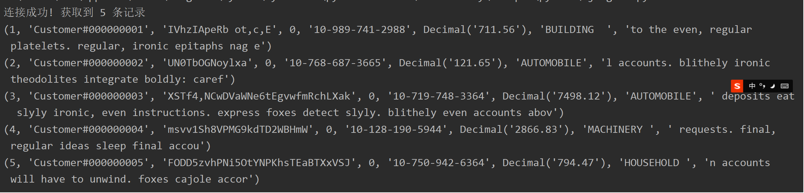
这样就验证了是否连接上数据库系统。
回到具体使用上，Django使用其自己的models.Model类对数据库的表容器、操作等等进行抽象，models位于django.db（即使用from django.db import models导入）。使用之前，需要继承modelss.Model类，类似地用如下代码创建好数据模型。
这些代码应该单独成为一个.py文件，而且应该放入一个文件夹（本实验名为demo），并且放入任意一个名为__init__.py的文件在该文件夹中，以标识这个一个Python包。届时，Django的配置项中应该导入这个Python包以作为其所谓的app包，这是Django进行模块管理的要求。
| Python |
|---|
1
2
3
4
5
6
7
8
9
10
11
12
13
14
15
16
17
18
19
20
21
22
23
24
25
26
27
28
29
30
31
32
33
34
35
36
37
38
39
40
41
42
43
44
45
46
47
48
49
50 | # 定义模型（映射现有表）
from django.db import models
class Customer(models.Model):
C_CUSTKEY = models.IntegerField(primary_key=True)
C_NAME = models.CharField(max_length=25)
C_ADDRESS = models.CharField(max_length=40)
C_NATIONKEY = models.IntegerField()
C_PHONE = models.CharField(max_length=15)
C_ACCTBAL = models.DecimalField(max_digits=15, decimal_places=2)
C_MKTSEGMENT = models.CharField(max_length=10)
C_COMMENT = models.CharField(max_length=117)
class Meta:
app_label = 'demo'
db_table = 'CUSTOMER' # 移除dbo前缀，Django会自动处理schema
managed = False
def __str__(self):
return self.C_NAME
class Orders(models.Model):
O_ORDERKEY = models.IntegerField(primary_key=True)
O_CUSTKEY = models.IntegerField()
O_ORDERSTATUS = models.CharField(max_length=1)
O_TOTALPRICE = models.DecimalField(max_digits=15, decimal_places=2)
O_ORDERDATE = models.DateField()
O_ORDERPRIORITY = models.CharField(max_length=15)
O_CLERK = models.CharField(max_length=15)
O_SHIPPRIORITY = models.IntegerField()
O_COMMENT = models.CharField(max_length=79)
# 建立与Customer的外键关系
CUSTOMER = models.ForeignKey(
Customer,
on_delete=models.DO_NOTHING,
db_column='O_CUSTKEY', # 映射数据库中的真实字段名
to_field='C_CUSTKEY', # 外键目标字段
related_name='orders'
)
class Meta:
app_label = 'demo'
db_table = 'ORDERS' # 移除dbo前缀
managed = False
def __str__(self):
return f"Order {self.O_ORDERKEY} - {self.O_ORDERPRIORITY}"
|
其中，“related_name='orders'”是一个关联名称，它帮助后续查询的时候，直接从Customer实例访问到Orders上的属性。观察这两个Model子类的定义，这实际上完全对应了如下建表语句：
| SQL |
|---|
1
2
3
4
5
6
7
8
9
10
11
12
13
14
15
16
17
18
19
20
21
22
23
24
25
26
27 | CREATE TABLE CUSTOMER (
C_CUSTKEY INTEGER NOT NULL,
C_NAME VARCHAR(25) NOT NULL,
C_ADDRESS VARCHAR(40) NOT NULL,
C_NATIONKEY INTEGER NOT NULL,
C_PHONE CHAR(15) NOT NULL,
C_ACCTBAL DECIMAL(15,2) NOT NULL,
C_MKTSEGMENT CHAR(10) NOT NULL,
C_COMMENT VARCHAR(117) NOT NULL);
CREATE TABLE ORDERS (
O_ORDERKEY INTEGER NOT NULL,
O_CUSTKEY INTEGER NOT NULL,
O_ORDERSTATUS CHAR(1) NOT NULL,
O_TOTALPRICE DECIMAL(15,2) NOT NULL,
O_ORDERDATE DATE NOT NULL,
O_ORDERPRIORITY CHAR(15) NOT NULL,
O_CLERK CHAR(15) NOT NULL,
O_SHIPPRIORITY INTEGER NOT NULL,
O_COMMENT VARCHAR(79) NOT NULL);
ALTER TABLE CUSTOMER
ADD PRIMARY KEY (C_CUSTKEY);
ALTER TABLE CUSTOMER
ADD FOREIGN KEY (C_NATIONKEY) references NATION;
ALTER TABLE ORDERS
ADD PRIMARY KEY (O_ORDERKEY);
|
事实上，实际场景下完全基于Django后端的项目中，数据库的建表操作也是使用Django ORM完成的，此处并没有用到这个功能。
以后，配置项应该加入：
| Python |
|---|
| settings.configure(
DATABASES={
......
},
INSTALLED_APPS=[
'demo', # 数据模型所在的 app
]
)
|
Model.objects是对数据库交互的抽象，是Django交互数据库的主要接口，这个对象类有大量方法。一个最简单的使用ORM代码进行查询的方法如下：
| Python |
|---|
1
2
3
4
5
6
7
8
9
10
11
12
13
14
15
16
17
18
19 | import django
from django.conf import settings
settings.configure(......)
django.setup()
from demo.djangomodels import Customer, Orders
from django.db import models
def demo_interface_style():
print("前10个客户:")
customers = Customer.objects.all()[:10]
for c in list(customers):
print(f"ID: {c.C_CUSTKEY}, Name: {c.C_NAME}")
if __name__ == "__main__":
demo_interface_style()
|
运行结果：
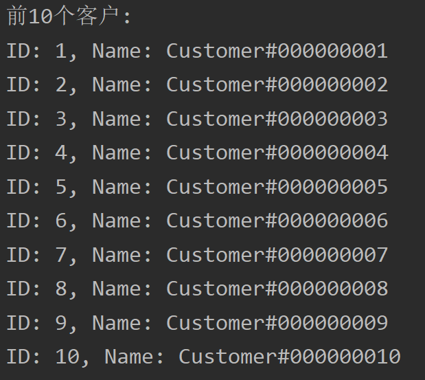
增删改查代码与运行结果
本部分对Model.objects对象类的核心方法的使用做演示和介绍，这些方法涵盖各种增删改查及其变体。
all()方法：获取所有数据记录，每一个记录是定义的Model继承类的一个实例，前文已经演示。
其实，有了all()方法，之后的所有操作都可以放在Python完成，为了利用数据库系统的优化，以下方法依然是必要的。
get()方法：获取一条记录，相当于where等值查询，而且只会返回一条记录：
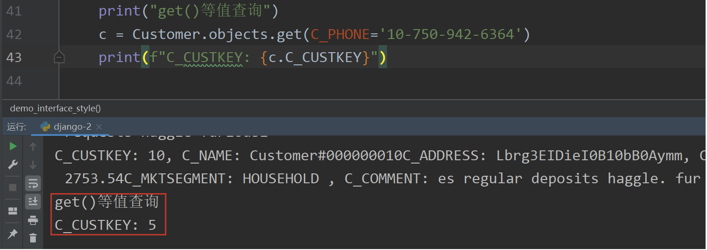
filter()方法：条件过滤，相当于where范围查询。这个方法表示大于小于条件需要用一种特别的语法，其也可以使用等值查询，会返回所有结果，区别于all()只返回一个。
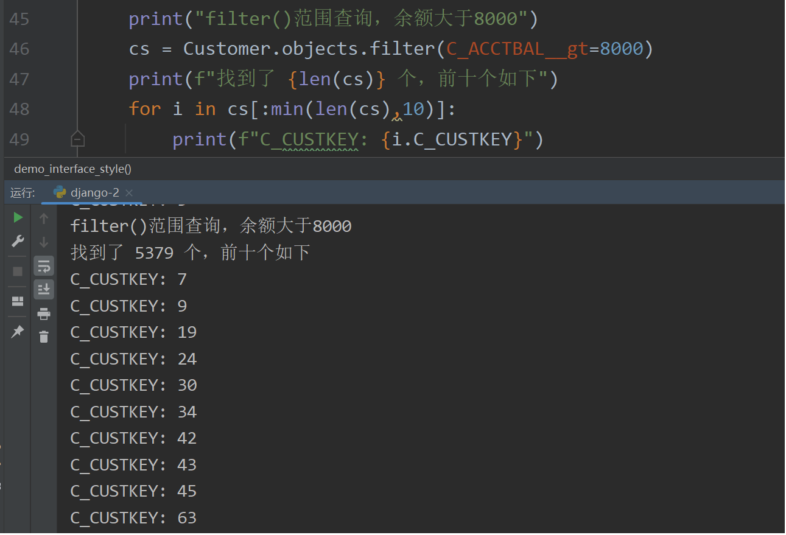
exclude()方法：反条件过滤，相当于filter()方法条件取反：
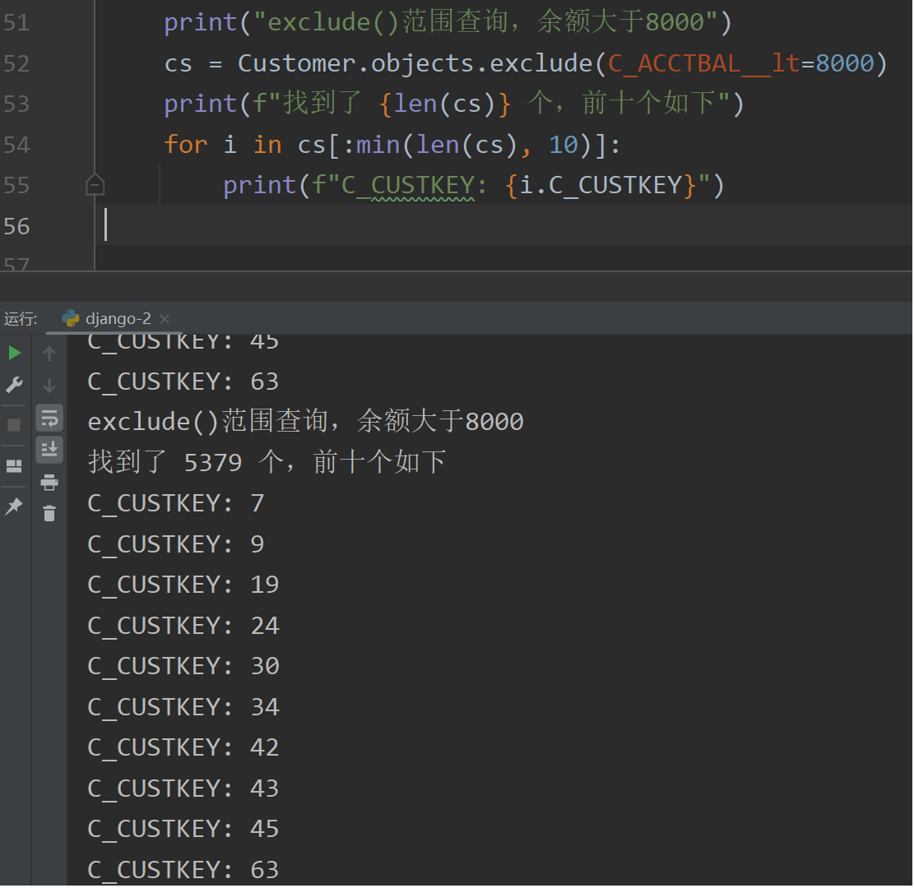
Q对象：这是一个重载了Python布尔运算符的对象，可以用来实现组合条件的查询，相当于where后使用布尔表达式连接一些组合条件：
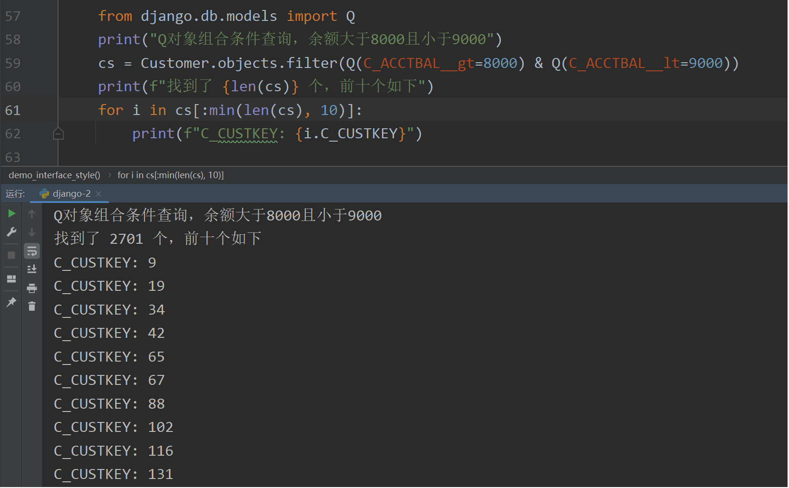
实际上，对于与条件，语句
| Python |
|---|
| cs = Customer.objects.filter(Q(C_ACCTBAL__gt=8000) & Q(C_ACCTBAL__lt=9000))
|
等价于
| Python |
|---|
| cs = Customer.objects.filter(C_ACCTBAL__gt=8000).filter(C_ACCTBAL__lt=9000)
|
但是，对于或条件，采用Q对象会更加方便。
字符匹配相关方法：例如含有子串关系，另外其还支持开头、结尾、正则表达式等等：
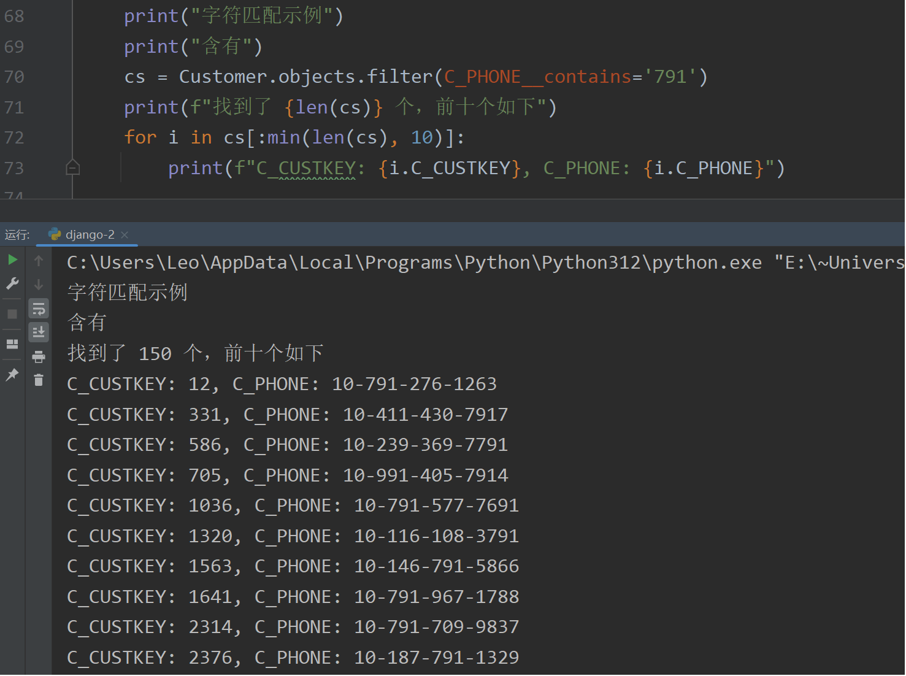
还有其他若干查询写法，大多都使用“双下划线后缀”的语法。
distinct()：返回去重结果。
values()：可以看做实现了投影功能，填入一个（或者多个）字符串表示的属性名，把表在这些属性上投影，后文实现分组聚集的时候该方法会起到作用。这个方法默认不去重，可以结合distinct()实现去重。
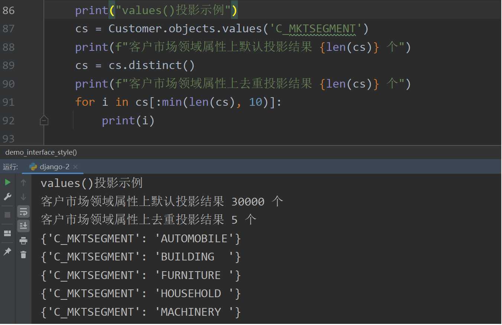
F表达式：这用于在各个参数中需要引用某个属性列的时候进行包装。
Value表达式：有一些方法的参数需要把基本数据进行包装。以上两个示例结合下面方法演示。
annotate()单独使用方法1：创建一个临时列，这不修改数据库，但是之后的方法调用可以使用这个列：
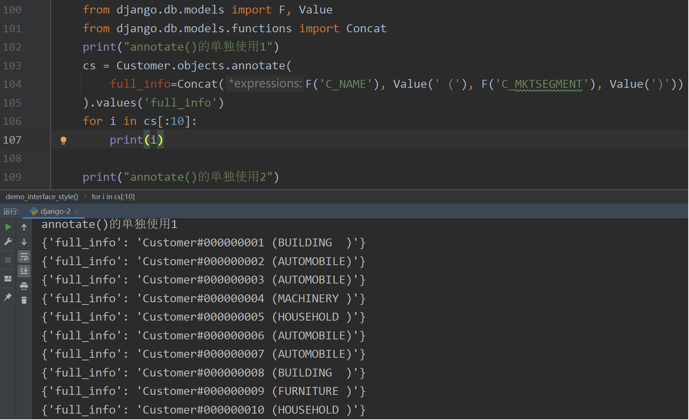
order_by()：排序，该方法之后传入多个属性，就是多属性排序：
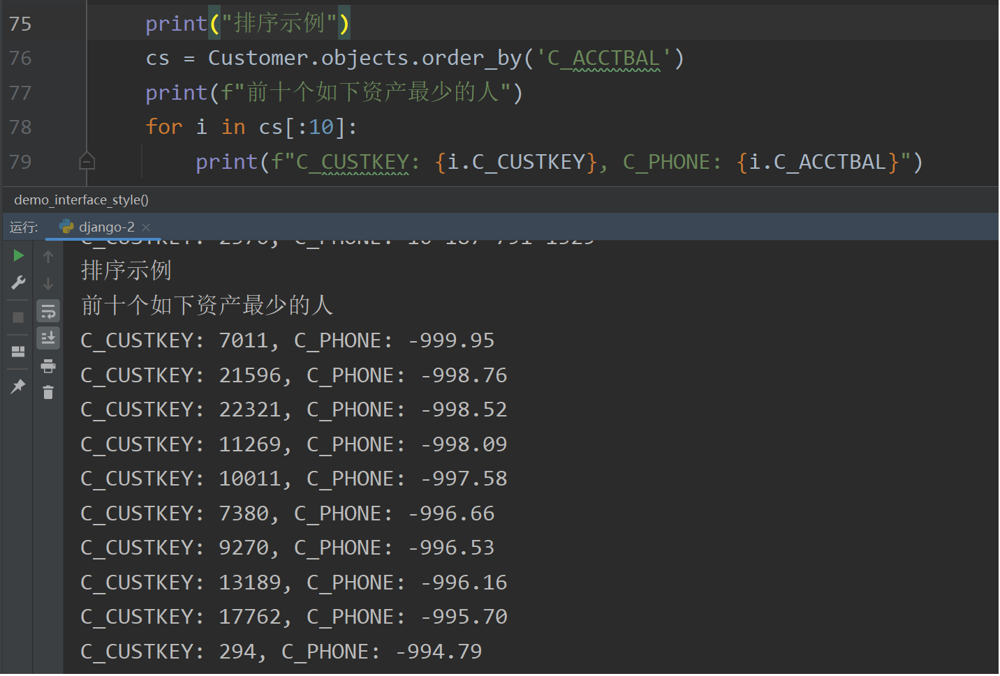
聚集还有分组聚集用两个不同方法实现。
aggregate()：填入一个聚集函数，聚合函数的参数是一个用字符串表示的属性名，把调用者在这个属性上按照聚集函数聚集出一个结果：
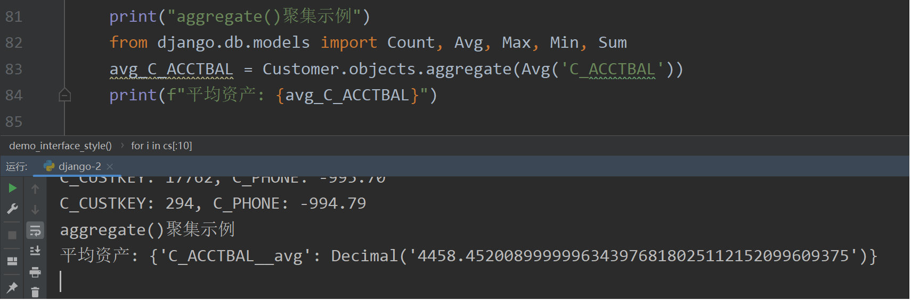
annotate()分组聚集用法：可以单独使用，也可以结合values()实现分组聚集：
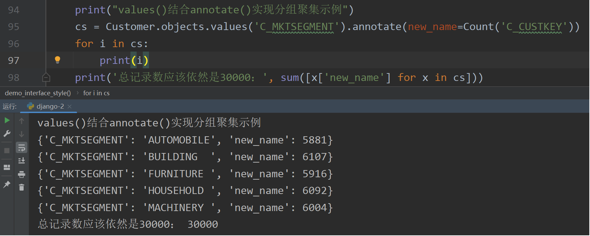
这相当于
| SQL |
|---|
| SELECT C_MKTSEGMENT, COUNT(C_CUSTKEY) AS new_name
FROM customer
GROUP BY C_MKTSEGMENT
|
annotate()单独使用方法2：另一种单独使用的方法，可以在被参考表上建立的反向外键关系上做聚集，例如此处Orders表有外键参考到Customer上，Customer表可以用这个信息聚合出被几个参考表的记录参考，实际场景中这里的意义是识别顾客活跃与否，只需要再加上筛选或者排序：
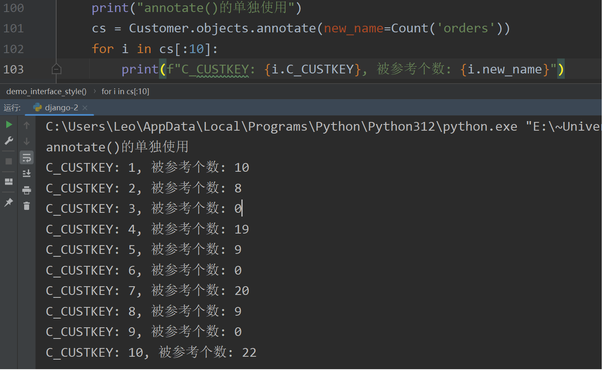
总之，这一语句
| SQL |
|---|
| SELECT a,b, SUM(c) as sum_c
FROM table0
WHERE (filter_condition1)
GROUP BY d
HAVING (filter_condition2)
ORDER BY a
|
在Django中可以写为
| Python |
|---|
| Table0.objects.filter(filter_condition1) \ # WHERE
.values('d') \ # GROUP BY
.annotate(sum_c=Sum('c')) \ # GROUP BY
.values('a', 'b', 'agg_c') \ # SELECT
.filter(filter_condition2) \ # HAVING
.order_by('a') # ORDER BY
|
多表查询只介绍利用外键的多表查询，因为Django对于任意两个表的多表查询支持并不良好，这通常涉及到不良好的数据模型定义、raw()方法执行原始SQL等问题。如果按照前文方法定义外键，其使用方法十分简洁。
Orders 有到 Customer 的外键。从 Orders对象 访问 Customer对象 可以直接用“点+外键”方法：
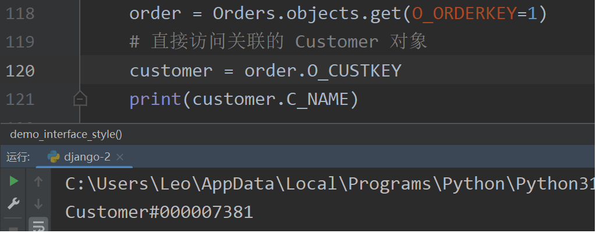
也可以一次性获取所有的外键关联数据对象，使用select_related()方法：
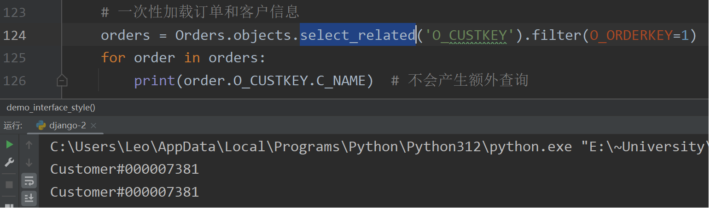
还可以使用“双下划线”语法直接访问被参照表的属性：
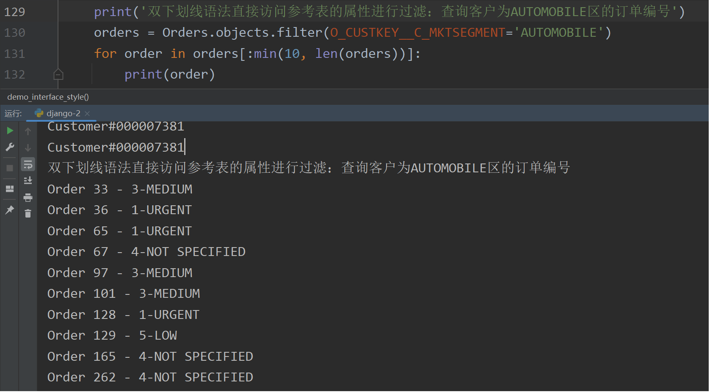
也支持反向访问，相比于“点+外键”，这里利用数据模型定义的“点+related_name”：
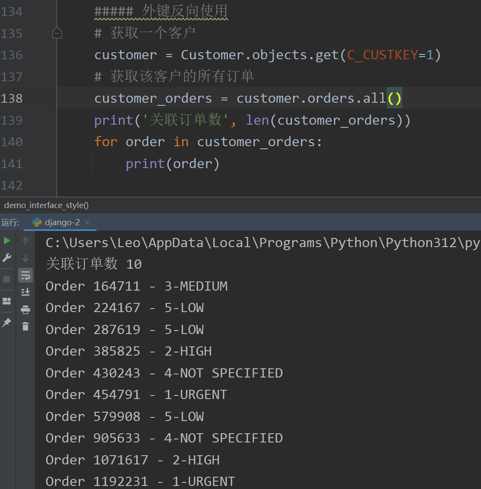
也可以使用“双下划线”语法直接访问参照表的属性：
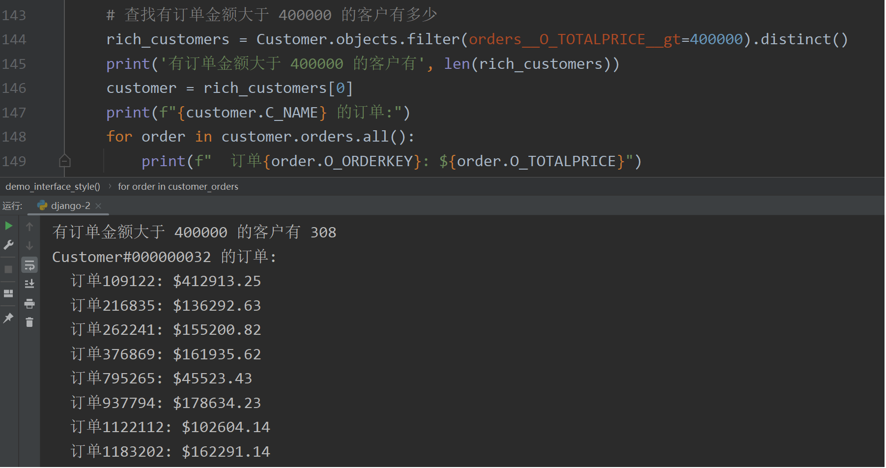
增删改代码，建议进行显式事务管理，from django.db import transaction，之后的事务代码应该放在with transaction.atomic():代码块之下。
| Python |
|---|
1
2
3
4
5
6
7
8
9
10
11
12
13
14
15
16
17
18
19
20
21
22
23
24
25
26
27 | # 增
with transaction.atomic():
new_customer = Customer(
C_CUSTKEY=new_custkey,
C_NAME=new_name,
C_ADDRESS=new_address,
C_NATIONKEY=new_nationkey,
C_PHONE=new_phone,
C_ACCTBAL=new_acctbal,
C_MKTSEGMENT=new_mktsegment,
C_COMMENT=new_comment
)
new_customer.save()
#改
with transaction.atomic():
customer_to_update = Customer.objects.get(C_CUSTKEY=new_custkey)
customer_to_update.C_NAME = second_name
customer_to_update.C_ADDRESS = second_address
customer_to_update.C_ACCTBAL = second_acctbal
customer_to_update.C_COMMENT = second_comment
customer_to_update.save()
#删
with transaction.atomic():
customer_to_delete = Customer.objects.get(C_CUSTKEY=new_custkey)
customer_to_delete.delete()
|
填入数据之后（代码省略），运行结果如下：
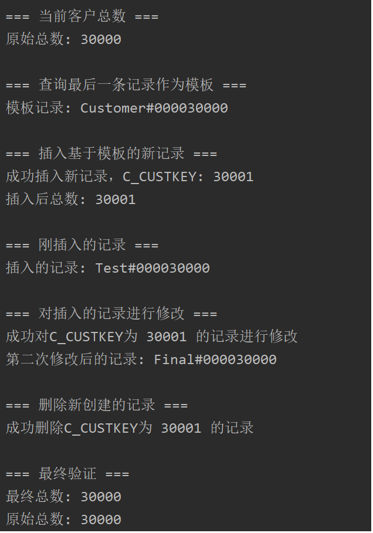
和预期相符合。